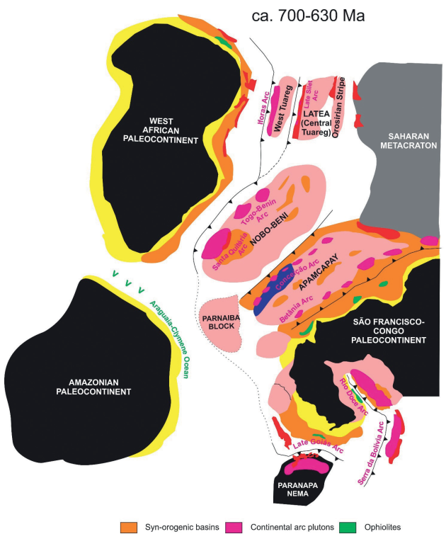

Toward na integrated model of geological evolution for NE Brazil - NW Africa: The Borborema Province and its connections to the Trans-Saharan (Benino-Nigerian and Tuared Shields) and Central African Orogens

Resumo em Português
Tanto a Província Borborema do NE do Brasil quanto as províncias geológicas do NW da África — o Orógeno Transaariano, composto pelos escudos Tuaregue e Benino-Nigeriano, e o Orógeno Centro-Africano de Camarões, Chade e República Centro-Africana — são regiões geológicas complexas com superposição de eventos deformacionais, metamórficos e magmáticos distintos, com configuração estrutural final durante a Orogenia Brasiliana/Pan-Africana (~625–510 Ma). Essas províncias representam o sítio de importantes processos de construção de montanhas na transição Ediacarano/Cambriano, que culminaram na amalgamação do Gondwana Ocidental após a colisão dos paleocontinentes Oeste-Africano–São Luís, São Francisco–Congo e Saariano.Nos últimos anos, a descoberta e caracterização de unidades tectônicas-chave como ofiolitos, eclogitos, rochas de AP/UAP e arcos magmáticos tanto oceânicos quanto continentais têm ajudado a esclarecer esses processos e a propor modelos tectônicos para a evolução geológica do NE do Brasil e do NW da África. As conexões dos cinturões marginais que emolduram essas províncias são progressivamente melhor delimitadas, enquanto as correlações nas porções interiores altamente retrabalhadas de ambas as províncias demandam investigação adicional. Questões de importância primária incluem a continuação ou não do Cinturão Cariris Velhos (1000–920 Ma) do NE do Brasil para o NW da África, e se os domínios de embasamento Norte Borborema/Benino-Nigeriano e Alto Pajeú–Alto Moxotó–Rio Capibaribe–Pernambuco-Alagoas/Adamawa-Yade poderiam representar blocos descratonizados desenvolvidos por hiperextensão e descolamento de uma margem norte do paleocontinente São Francisco-Congo.